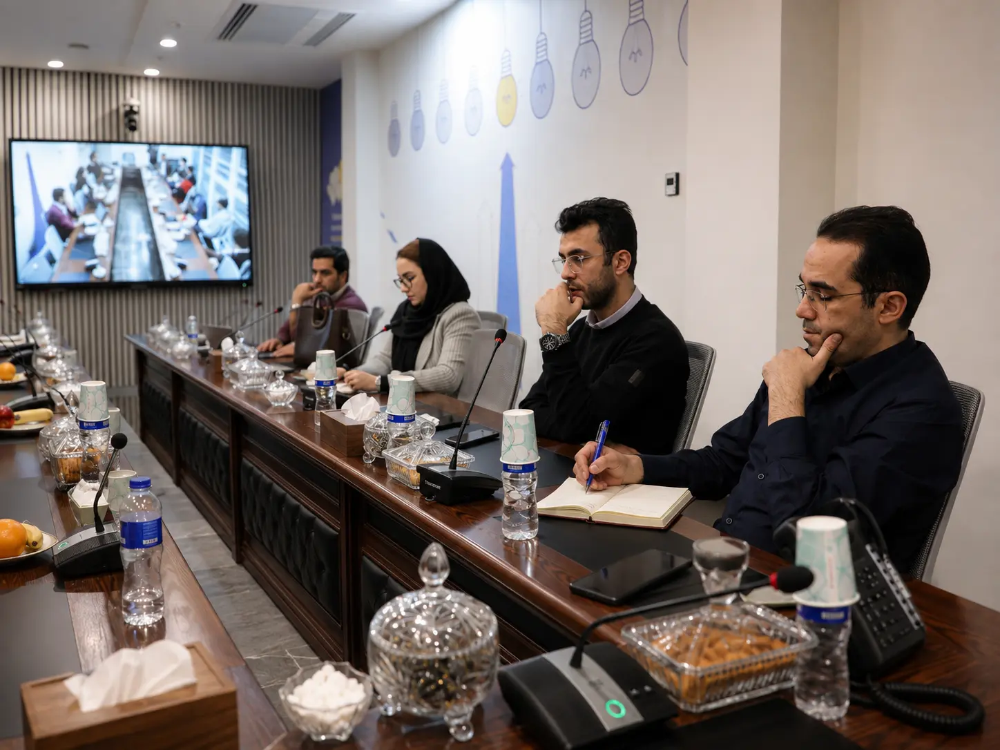
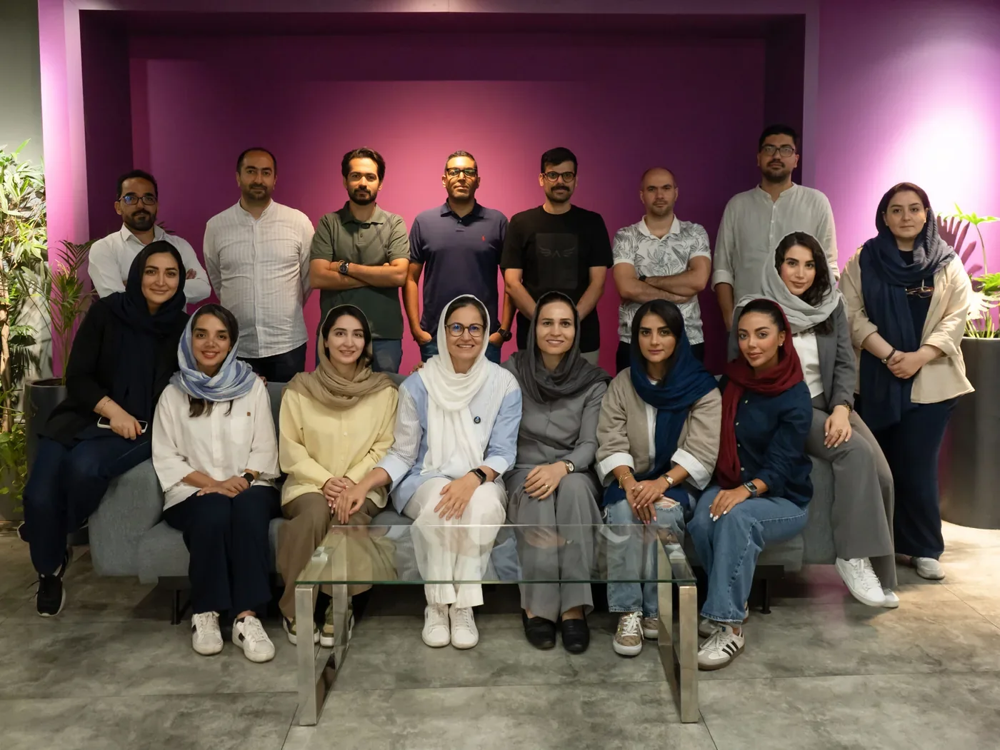
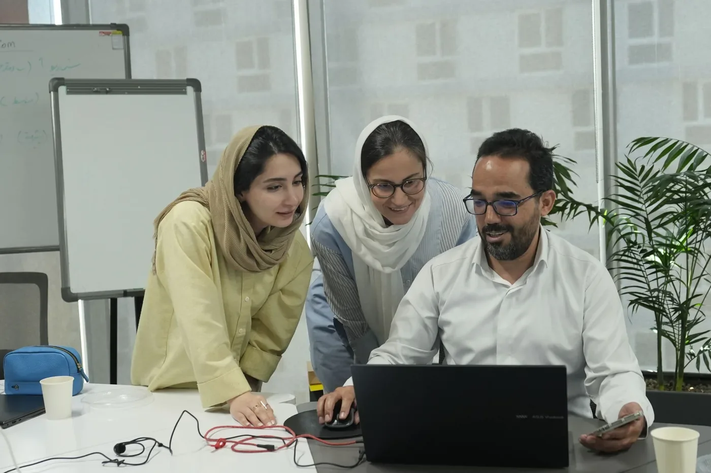
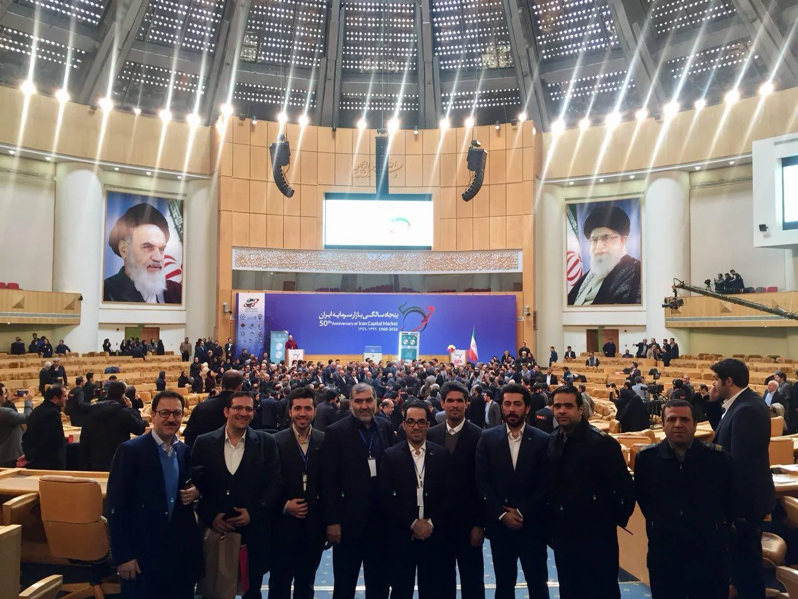
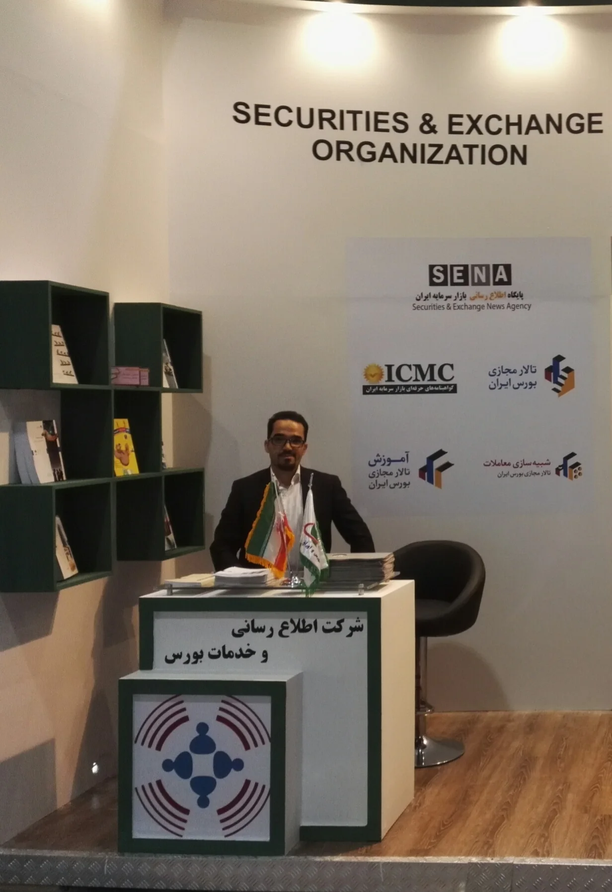
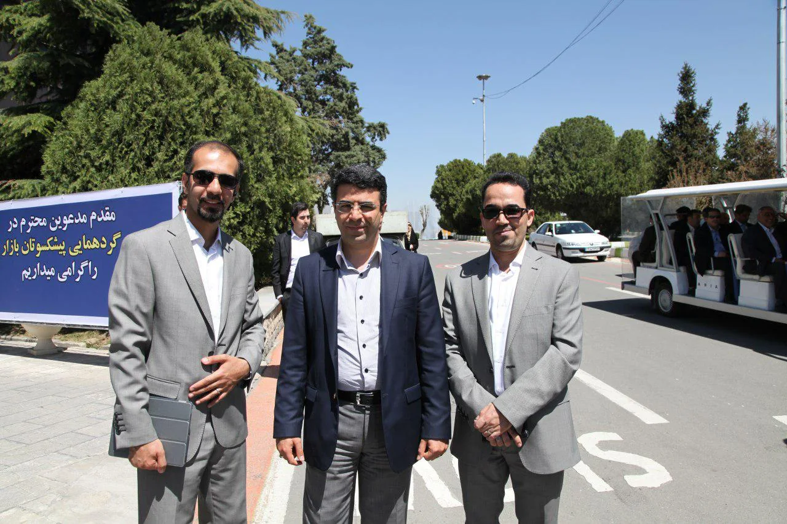

از ۱۳۷۸
نرمافزار، پایگاه داده و کسبوکار فناوری
آغاز مسیر حرفهای با توسعه نرمافزار، بانکهای اطلاعاتی و محصولات دیجیتال؛ سپس تجربه مدیریت و مالکیت کسبوکار نرمافزاری و هدایت پروژههای اجرایی.
مسیر من از نرمافزار و کارآفرینی فناوری آغاز شد و در ادامه به مدیریت پروژههای دیجیتالسازی، تجربه سازمانی در بازار سرمایه، مدیریت آموزش و نوآوری و همکاری در تیمهای فناوری اطلاعات رسید. وجه مشترک این مسیر، تبدیل مسئله واقعی به فرایند، محصول یا راهکار قابل اجرا بوده است.
این صفحه قرار نیست فهرست کامل سمتها باشد؛ هدف، نشان دادن نوع مسئلهها، محیطهای کاری و مسئولیتهایی است که هویت حرفهای امروز من را ساختهاند.
آغاز مسیر حرفهای با توسعه نرمافزار، بانکهای اطلاعاتی و محصولات دیجیتال؛ سپس تجربه مدیریت و مالکیت کسبوکار نرمافزاری و هدایت پروژههای اجرایی.
مدیریت پروژههای تبدیل آرشیوهای کاغذی به دارایی دیجیتال با تیمهای اجرایی، طراحی فرایند، نرمافزار اختصاصی و کنترل کیفیت عملیات.
تجربه همکاری سازمانی در محیط بازار سرمایه، حضور در فرایندهای اجرایی و رویدادی و مشارکت مستمر در فعالیتهای مرتبط با نشر تخصصی و تولید دانش.
حضور در نمایشگاه بازار سرمایه در جزیره کیش در کنار همکاران سازمان بورس و ارکان؛ تجربهای از تعامل حرفهای در فضای تخصصی بازار سرمایه، معرفی خدمات و حضور در بستر رویدادی این اکوسیستم.
تجربه مدیریت یادگیری سازمانی و نوآوری با تمرکز بر تعامل میان مدیران، تیمها، توسعه قابلیتهای سازمان و تبدیل دانش به اقدام.
حضور در دوره آموزشی «هوش مصنوعی در منابع انسانی» بهعنوان سرپرست آموزش دیجیپی، در کنار همکاران دیجیکالا؛ با تمرکز بر کاربردهای عملی هوش مصنوعی در حوزه منابع انسانی و یادگیری سازمانی.
ادامه حضور مستقیم در محیط فناوری و نرمافزار، در کنار مسیر مدیریتی؛ برای حفظ تماس با مسائل واقعی سامانهها، کاربران و عملیات فناوری اطلاعات.
تجربه طولانی در زنجیره تولید دانش؛ از تعامل با پدیدآورندگان و ارزیابی تا مدیریت تولید، طراحی، انتشار و توسعه محصولات دانشی.
تجربه مدیریتی زمانی معنا پیدا میکند که در متن واقعی سازمان دیده شود؛ جلسات، تصمیمها، تعامل با مدیران و همراهی با تیمها.

حضور در دوره آموزشی هوش مصنوعی در منابع انسانی بهعنوان سرپرست آموزش دیجیپی، در کنار همکاران دیجیکالا؛ تجربهای در پیوند یادگیری سازمانی، منابع انسانی و کاربردهای عملی هوش مصنوعی.


این تصویر را عمداً بدون کراپ و با همان شلوغی سالن نگه داشتهام؛ چون ارزش آن در نشان دادن مقیاس واقعی رویداد و محیط سازمانی است، نه در تبدیلشدن به یک پرتره.



تجربه بازار سرمایه در مسیر حرفهای من فقط به دانش مالی محدود نبوده؛ بخشی از آن در متن سازمان، رویداد، تولید دانش و تعامل با بازیگران تخصصی این حوزه شکل گرفته است.
مشاهده سابقه نشر تخصصینقطه مشترک این تجربهها، مدیریت در مرز فناوری و کسبوکار است: فهم مسئله، طراحی راهحل، ساخت فرایند، هدایت اجرا و استفاده از داده و فناوری برای ایجاد تغییر قابل اندازهگیری.